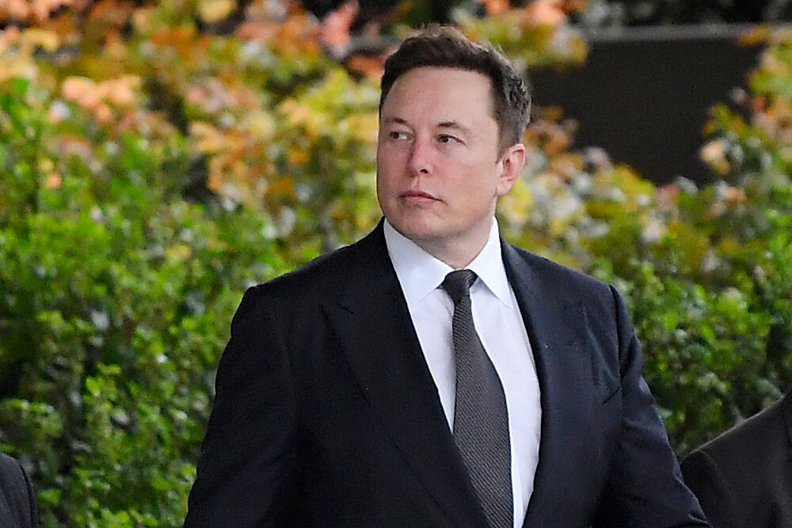

Elon Musk born in South Africa, June 28, 1971.
"Elon Musk, empreendedor e inventor visionário, é conhecido mundialmente por liderar empresas inovadoras que transformam indústrias. Como CEO da Tesla, ele impulsiona a revolução dos veículos elétricos, enquanto na SpaceX está na vanguarda da exploração espacial. Musk também fundou a Neuralink, explorando as fronteiras da interface cérebro-máquina, e The Boring Company, abordando os desafios urbanos. Sua mente criativa e ousadia moldam o futuro da tecnologia e da sustentabilidade."
timeline
- 1995 Zip2 Corporation: Co-fundação da Zip2, sua primeira empresa, que proporcionou soluções para a indústria de mídia.
- 1999 Venda da Zip2: Vende a Zip2 e funda a X.com, que eventualmente se tornaria o PayPal.
- 2002 PayPal é Adquirido: Venda bem-sucedida do PayPal para o eBay. 2002 Fundação da SpaceX com o objetivo de tornar a exploração espacial mais acessível.
- 2004 Tesla Motors: Co-fundação da Tesla Motors, dando início à revolução dos veículos elétricos.
- 2006 SolarCity: Contribui para a fundação da SolarCity, focada em energia solar.
- 2008 Primeiro Carro da Tesla: Lançamento do Tesla Roadster, o primeiro carro totalmente elétrico da Tesla.
- 2015 SpaceX Atinge a Órbita Terrestre: A SpaceX se torna a primeira empresa privada a enviar uma espaçonave para a órbita terrestre e recuperá-la.
- 2017 Neuralink e The Boring Company: Fundação da Neuralink, dedicada à interface cérebro-máquina, e da The Boring Company, para soluções de tunelamento urbano.
- 2020 SpaceX Leva Astronautas à Estação Espacial Internacional: A SpaceX, em parceria com a NASA, realiza o primeiro voo tripulado comercial para a Estação Espacial Internacional.
- 2021 Tesla Model S Plaid: Lançamento do Tesla Model S Plaid, estabelecendo novos padrões para carros elétricos de alto desempenho.